メトロのマナーポスター。
今、パリではiPhone強盗が増えているらしい。
iPhoneを持っているひとを狙ってひったくったり、殴りつけて強奪したりするみたい。
転倒して死んじゃった人もいるひともいるとか。
バスの車内でも「あなたの携帯は貴重なので公共の場所で使用していると強盗にあう可能性があります…」みたいな注意書きがあった。（しかも日本語で！）
しかしパリに来たばかりのころはそんな話も露知らず、メトロの中で使ってた…写真撮ったり、ムービー撮ったり…今思うと結構あぶない行為。
パリのお友だちからも、身近な人の被害とかを聞いた。
強盗だなんて…って日本では想像もできないけど、パリではちょっと身を引き締めないといけないのかも。
---------------------------------------------------
地鐵的禮貌廣告
最近巴黎有很多iPhone小偷！
小偷把用iPhone的人瞄準。奪取！
聽説。。。也有跌倒死的人。
公車裏面有一張廣告是[你的手機貴重！如果你在公共場所用手機，可能被小偷偷走]
可是我才來了巴黎的時候，我不知道這個話了。
所以我在地鐵用iPhone！非常危險的行動！
住在巴黎的朋友告訴我，她的朋友的手機也被小偷偷走了。。。
---------------------------------------------------
メトロのマナーポスター。
今、パリではiPhone強盗が増えているらしい。
iPhoneを持っているひとを狙ってひったくったり、殴りつけて強奪したりするみたい。
転倒して死んじゃった人もいるひともいるとか。
バスの車内でも「あなたの携帯は貴重なので公共の場所で使用していると強盗にあう可能性があります…」みたいな注意書きがあった。（しかも日本語で！）
しかしパリに来たばかりのころはそんな話も露知らず、メトロの中で使ってた…写真撮ったり、ムービー撮ったり…今思うと結構あぶない行為。
パリのお友だちからも、身近な人の被害とかを聞いた。
強盗だなんて…って日本では想像もできないけど、パリではちょっと身を引き締めないといけないのかも。
---------------------------------------------------
地鐵的禮貌廣告
最近巴黎有很多iPhone小偷！
小偷把用iPhone的人瞄準。奪取！
聽説。。。也有跌倒死的人。
公車裏面有一張廣告是[你的手機貴重！如果你在公共場所用手機，可能被小偷偷走]
可是我才來了巴黎的時候，我不知道這個話了。
所以我在地鐵用iPhone！非常危險的行動！
住在巴黎的朋友告訴我，她的朋友的手機也被小偷偷走了。。。
---------------------------------------------------
{kind=link}
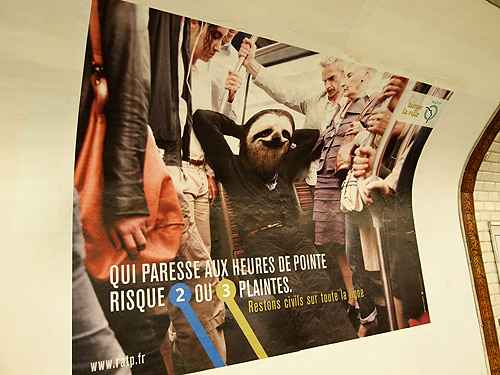
ラスパイユの朝市。 ここはビオマルシェで有名みたい。もうすでにアパルトマンの冷蔵庫には食材が詰められている状態だったから、何も買わずに見学だけ。 …が、スーパーや商店だけじゃなくてマルシェで食材を探せばよかった！って店頭でジタバタするほど、みずみずしい食材やらじゅうっと肉汁したたる惣菜がそこかしこ… --------------------------------------------------- [Raspail]早市。 這兒有名的有機食品市。 可是我的冰箱裏有很多食品。。。所以我不買了。 不過我的冰箱裏的食品是超級市場的東西。我非常懊悔。。。因爲這兒的食品又新鮮又便宜又像好吃的菜！ ---------------------------------------------------{kind=link}
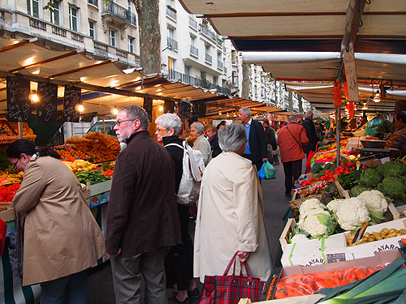
山盛りのくだもの！野菜！きのこ！ピカピカでつやつや！ --------------------------------------------------- 很多水果！蔬菜！蘑！閃閃！ ---------------------------------------------------{kind=link}
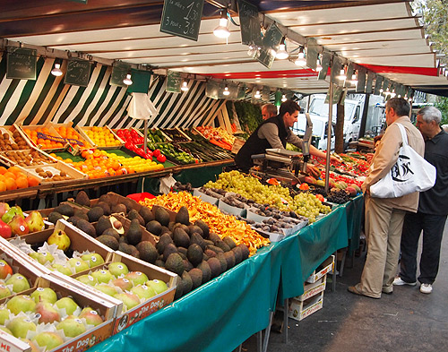
子ども服のワンピース屋さん。 みごとにワンピースオンリー。ふりふりほあほあなお姫様みたいなワンピース。 そういえば、こっちの子どもはキャラクターがついた洋服着てないような… ピカチューとか戦隊なんとかとか。 --------------------------------------------------- 小孩子的衣服店。 只有連身裙。像公主的衣服！ 對了。。。法國的小朋友沒穿卡通的衣服。 沒有[神奇寶貝]的衣服。 ---------------------------------------------------{kind=link}
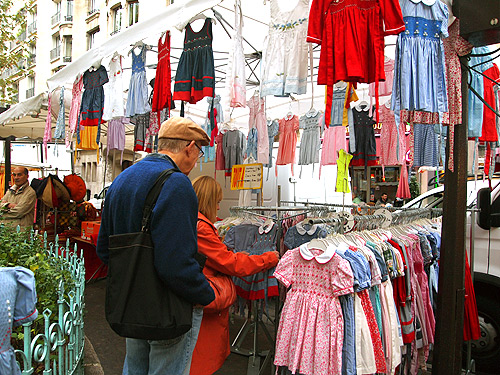
お魚とか貝類とかも豊富！ カニみそ出して「買うてくれー」って言ってる（ように見える）カニを何匹も見た。 --------------------------------------------------- 還有魚和貝等等很多！ 我看了一些黃去來的螃蟹。螃蟹叫我[你該買我！] ---------------------------------------------------{kind=link}
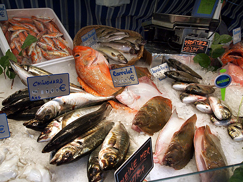
北駅。 タリスを見たくてやってきた。 前にオランダからパリに来たときタリスに乗ったのだけど、それがもうむちゃくちゃ良かった。 シートはふかふかだし、オランダからパリへの車窓風景はDVDにして売ってくれ！ってぐらい美しいし、休む暇なく車内食は出るし、飲み物も出るしで、気がついたらパリ！って有様だった。 --------------------------------------------------- 北站。 我想看了[THALYS]！所以我來了北站！ 我以前從荷蘭坐[THALYS]到巴黎去，這個的時候非常非常舒服！ 座位鬆鬆軟軟！窗戶外面的風景好像很美DVD！工作人員給我免費便當！飲料！ 我沒發現火車到巴黎。。。 ---------------------------------------------------{kind=link}
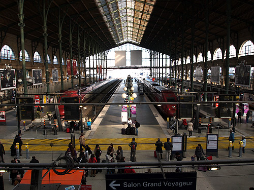
タリス。 オランダ、ベルギー、ドイツ、フランスを縦断する長距離列車。 4カ国を通るということで「THALYS」って名前はどこの言語でもない、ただ単にどこの国からも響きが良く感じる言葉が選ばれたという不思議な名前。 赤い列車いいよねー。 --------------------------------------------------- [THALYS]縱貫荷蘭和比利時和國和法國。 名字的語言不是法語，語，比利時語，荷蘭語。哪兒都聼舒服的句子。 紅色的火車很好看！ ---------------------------------------------------{kind=link}
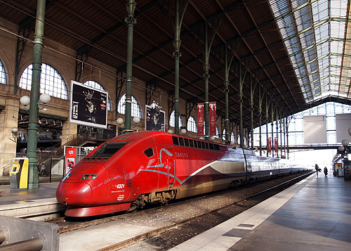
ところ変わって、アパルトマン近くのアンティークの手芸店。 もっとゆっくり店の中をごそごそすればよかったかな。 かごやら引き出しやら棚やらに色んなものが詰まっていて、人の家のたんすを漁っているみたいで面白かった。 --------------------------------------------------- 我的公寓附近的骨董手工藝店。 現在覺得。。。我應該慢慢看看。 因爲這家電的櫃子裏，籃，抽屜有很多有意思的東西。我覺得。。。找別人家的東西。 ---------------------------------------------------{kind=link}
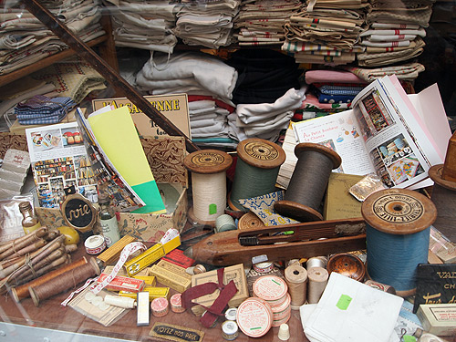
これは…通りすがりのお菓子屋さん。マジパン細工かな。かわいすぎる。 パリは食べるのが惜しいお菓子が多い。 --------------------------------------------------- 這家店市點心店。可愛點心！ 巴黎有很多可愛點心！所以巴黎的點心是吃得難過。。。 ---------------------------------------------------{kind=link}
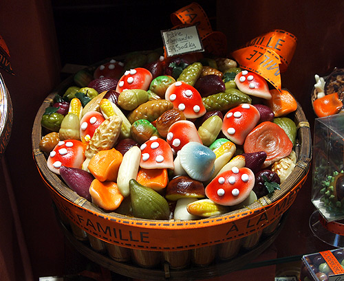
そしてチーズ！ 日本ではちょっと良さげなデパートの地下でしか扱いがないようなチーズが、あちらこちらで見かけるチーズ屋さんにずらり。 日本のお豆腐屋さんぐらいの頻度で見かけるかな。パリのチーズ屋さん。 そしてとにかく安くて、とにかく美味しい！ もうチーズにめろめろ。 --------------------------------------------------- 還有乳酪！ 巴黎的乳酪店有很多種乳酪！我覺得在日本買不到的乳酪。。。 還有非常便宜！好好吃！ 我愛乳酪！法國的乳酪很棒！！ ---------------------------------------------------{kind=link}
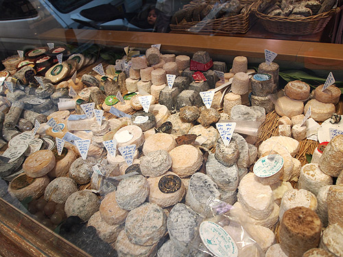
かわゆいポスター。 白テンかなー？街を歩くだけでたくさんのかわゆいものや、ドキドキするものに出会える。 --------------------------------------------------- 可愛廣告！ 白的黃鼠狼？在巴黎走路的時候我看到很多可愛的東西！ ---------------------------------------------------{kind=link}
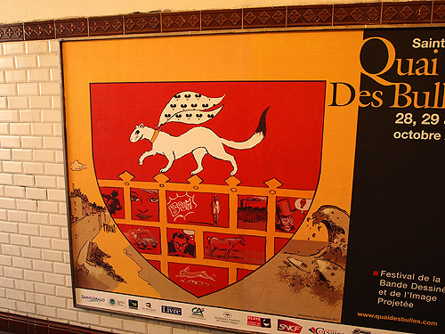